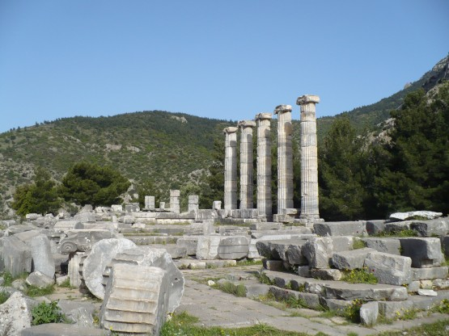
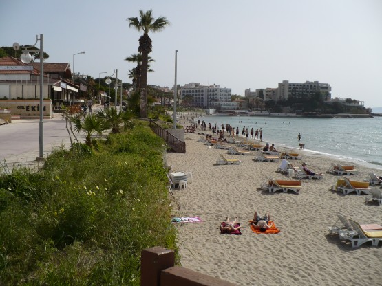
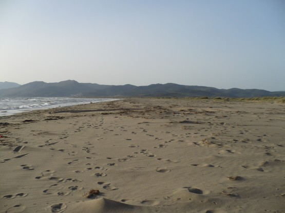

20 апреля
Встал рано и уже в 7 часов утра катил по дороге в сторону Приены, обозначенной во всех путеводителях как достопримечательность. Площадь, занимаемая развалинами, действительно большая, но в остальном там нет ничего особо примечательного, или я уже насмотрелся на древности? Удивило что развалины, которые находятся во многих километрах от моря да еще на высоте сотни метров, раньше были процветающим морским портом.
Приена:

Медленно и печально докатываюсь до Кушадасы. Отели, отели, отели. К морю не подъехать, наконец, практически в центре города выезжаю на городской пляж. Ооо, как же все-таки приятно поплавать в море после недели вкручивания педалей!!! Удивительно на пляже в основном местные молодые ребята, все как один в трусах по колено. В обычных плавках чувствовал себя белой вороной, ну да ладно - не нудистский и на том спасибо. Море показалось относительно теплым, получалось минут по 10 не вылезать из воды и при этом не замерзать. Местные в воду забегают со страшными криками, наверное чувствуют себя настоящими моржами.
Городской пляж Кушадасы:

С пляжа уезжать жалко, но пора дальше.
В этот день со стоянкой мне явно повезло, отъехав несколько километров от Кушадасы, попадаю на огромный дикий песчаный пляж длинной минимум 10 километров. Удивительно, как его еще не застроили отелями. Кстати, до Кушадасы песка на пляжах я не встречал.
Пустынный песчаный пляж.

Несколько местных компаний ждут заката солнца, оно в этом месте садится на воду, естественно очень красиво. После заката на весь пляж остаюсь я и еще одна машина-дом с пожилыми туристами. Дедок приходит поговорить, но мой английский не позволяет вести непринужденную беседу, жаль. Несколько раз за вечер вдоль пляжа проезжает полицейская машина. Удивительно, особенно если учесть что пляж совсем пуст.
**
Количество полиции в городах, жандармов в сельской местности меня поразило. На машинах, мотоциклах с автоматами, все такие серьезные - жуть. При этом все кругом на редкость спокойно и мирно. А может поэтому?
За день проехал 79 километров, не много, оно и понятно - не ехалось совсем. Заснул с мыслью, что завтра обязательно устрою отдых, дааа, не знал я что будет завтра.